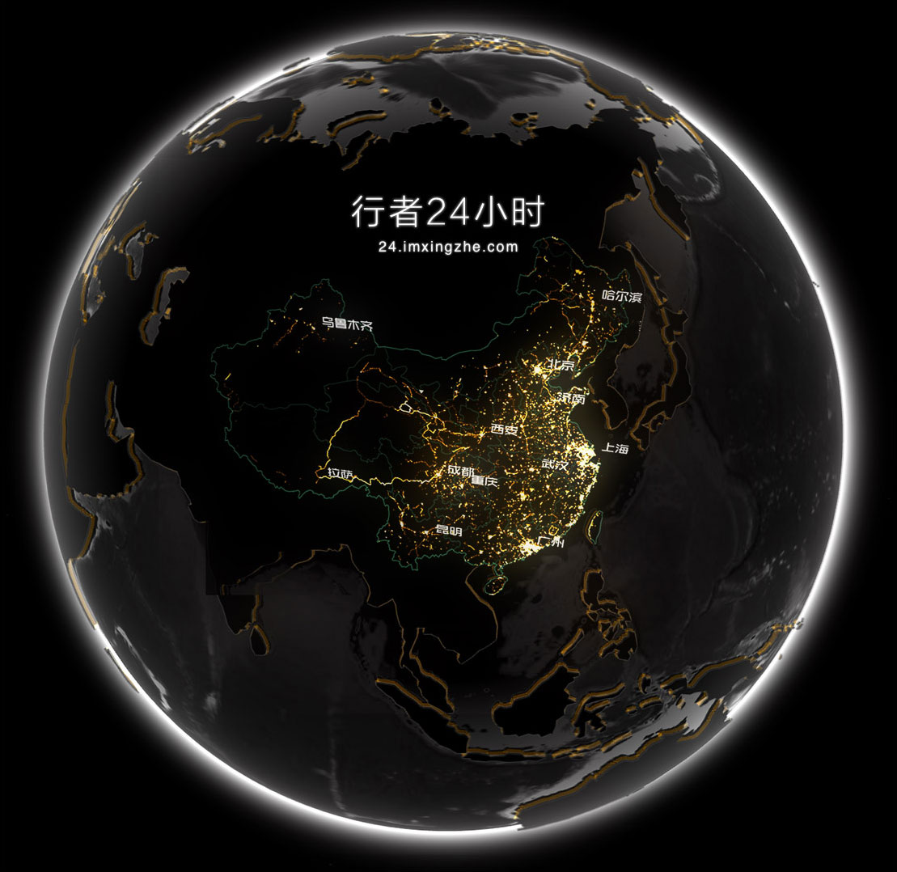

Excel图表部分暂告一段落（我悄悄地告诉你，Excel图标的精髓有二：1.活用组合图；2.数据转换），那么以下进入Echarts部分。
或许有人会问，Excel已经如此强大，为什么还要开发其他工具？对于这个问题，实际上最初看到网页图表的呈现的时候，我的态度是抵触的，因为看了一遍浏览下来的感觉是用Excel，大部分的图都能做，用Web呈现图表也并没有什么优势嘛。
所以，你以为我接下来要写，诸如，时至今日，我才觉得当时我是多么蠢这类的话么？NO，其实我一直觉得当时的想法是正确的，极简就是极好的。
不过，更为重要的一点是：如果固步自封，是不会进步的，所以，生而为人，就应该常学习，掌握一些新的东西。那么，这一期主题是：Echarts系列之——热力图。
an Introduction to Heatmap
首先，先引（chao）用（xi）一段话，说明下什么是热力图（heatmap）：
A heat map is a graphical representation of data where the individual values contained in a matrix are represented as colors. Fractal maps and tree maps both often use a similar system of color-coding to represent the values taken by a variable in a hierarchy. The term is also used to mean its thematic application as a choropleth map.
简单翻译下：热力图是一种图表，是一种使用颜色呈现具体数值的表达形式。（别问我为啥就翻了一句，因为百度翻译不靠谱。）
还是还我自己理解的话比较好...通俗来说，热力图就是用颜色深浅来表达数值高低的一种形式。如果还是不好理解的话，看图就一目了然了。
图1 ECharts热力图示意（刷新有惊喜）
这是ECharts上的示例图表，大概的意思是他们虚拟了一组数据，是关于登录百度首页的用户的视觉热区。图中，红色越深，表示用户看的时间越长，而白色区域就是用户基本不会扫视的地方。（这数据纯属虚构，请勿当成结论，切记，切记...）
所以，只要知道平面的坐标，以及相应的数据，想做什么样的热力图都是可以的。
有印象的小伙伴应该记得曾几何时做闵行学生数据的时候，出过这么一张图：
图2 闵行区学校肥胖率研究热力图这个是用Excel插件Power Map实现的，在Excel2016里，已经成为自带组件了，不过这里讲的是ECharts，所以Excel的相关部分请参考别人家的博客（reference里面有一条可以点进去看看）。
是不是看的有点心动，那就行动起来吧，自己也可以动手试试：
Heatmap in ECharts
对于ECharts这种代码形式的网站，像我这种没基础的说它什么好呢？不过还好，目前的水平还应该勉强足以支撑。
又到惯例时刻，我知道的，先出成品：
图3 ECharts热力图示意（刷新无惊喜）
那么，要怎么才能做成这个热力图呢？首先，你要有个底图，然后你要有一堆数据，然后，把数据贴到相应的地方，两个图拼一拼就好了。
是不是太笼统了？那就步骤分解下：
- 找底图
- 画热力图
- 爱拼才会赢
好吧，这时候是展示功力的时候了，可以到各种你喜欢的网页上找图，像我这种没节操的自然选的是暴走表情。
图4 主要看气质别问我最后为啥是德田有希风格的，我也不知道。
由于手头没有眼动仪（其实是懒得用了），那么我就大致确定下热区的位置，从这张图看来，文字肯定是焦点，还有耳光和手。于是就可以做热力图了。
先来段代码：
var heatData = [];
for (var i = 0; i < 20; ++i) {
heatData.push([
150 + Math.random() * 50,
200 + Math.random() * 100,
Math.random()
]);
}
for (var i = 0; i < 20; ++i) {
heatData.push([
200 + Math.random() * 50,
350 + Math.random() * 100,
Math.random()
]);
}
for (var i = 0; i < 20; ++i) {
heatData.push([
50 + Math.random() * 120,
40 + Math.random() * 60,
Math.random()
]);
}
for (var i = 0; i < 20; ++i) {
heatData.push([
250 + Math.random() * 120,
40 + Math.random() * 60,
Math.random()
]);
}
for (var i = 0; i < 100; ++i) {
heatData.push([
Math.random() * 400,
Math.random() * 400,
Math.random() * 0.1
]);
}
option = {
title : {
text: ''
},
series : [
{
type : 'heatmap',
data : heatData,
hoverable : true
}
]
};
以上代码运行后就可以得到下图（不行也没办法）：
图5 ECharts无底热力图（刷新有惊喜）然后写到网页里，两个图拼在一起就行了：
<div>
<img src="img/charts/05/04.jpg" style="width:400px;height:400px;position:absolute;margin-left:23%">
<div id="main3" style="height:400px;width:400px;margin-left:23%"></div>
</div>
<br/>
<span class="caption text-muted">图6 ECharts合成热力图（刷新有惊喜）</span>
<script type="text/javascript">
// 路径配置
require.config({
paths: {
echarts: 'js/echarts/build/dist'
}
});
// 使用
require(
[
'echarts',
'echarts/chart/heatmap', // 按需加载
],
function (ec) {
// 基于准备好的dom，初始化echarts图表
var myChart = ec.init(document.getElementById('main3'));
var heatData = [];
for (var i = 0; i < 20; ++i) {
heatData.push([
150 + Math.random() * 50,
200 + Math.random() * 100,
Math.random()
]);
}
for (var i = 0; i < 20; ++i) {
heatData.push([
200 + Math.random() * 50,
350 + Math.random() * 100,
Math.random()
]);
}
for (var i = 0; i < 20; ++i) {
heatData.push([
50 + Math.random() * 120,
40 + Math.random() * 60,
Math.random()
]);
}
for (var i = 0; i < 20; ++i) {
heatData.push([
250 + Math.random() * 120,
40 + Math.random() * 60,
Math.random()
]);
}
for (var i = 0; i < 100; ++i) {
heatData.push([
Math.random() * 400,
Math.random() * 400,
Math.random() * 0.1
]);
}
option = {
title : {
text: ''
},
series : [
{
type : 'heatmap',
data : heatData,
hoverable : true
}
]
};
// 为echarts对象加载数据
myChart.setOption(option);
}
);
</script>
图7 ECharts合成热力图（刷新有惊喜）
整体上还是比较简单的，主要就看自己的用途。
这里因为是随机数，所以看起来代码比较简单，以后要是能够有确切的数值，也是可以自行填写上去的。
Examples
整体上，写的有点枯燥，而且视觉效果也并没有想象中的那么好。毕竟是一个抛砖引玉的文章，而且，最重要的是作图的人自己的想象力。
所以，最后一个环节名为“别人家的孩子”，一起看看在这个丰富的世界中利用热力图有什么惊世骇俗的成品。


图ex2 中国骑行热力图 图ex3 Action Heat Map 图ex4 室内热感成像图 图ex5 dota2玩家位置热度图 图ex6 男女性棒球热力图结束语：看了这么多例子，是不是觉得热力图特别cool？其实，很多时候，使用热力图的思维模式并不是因图而作图，而是需要我们仅仅把它看做一个图层，一个能用于各种底图的透明色而已。所以，发挥你的想象力吧，在各种各样的领域中，热力图都一样会发光发亮。
毕竟，最最最关键的是，热力图缺少的不是实现手段，而是数据量，这在大数据时代就根本不算什么了。
Reference
Wiki：Heat mapECharts:热力图实例
Office发布2016新版，制图神技能亮瞎众人